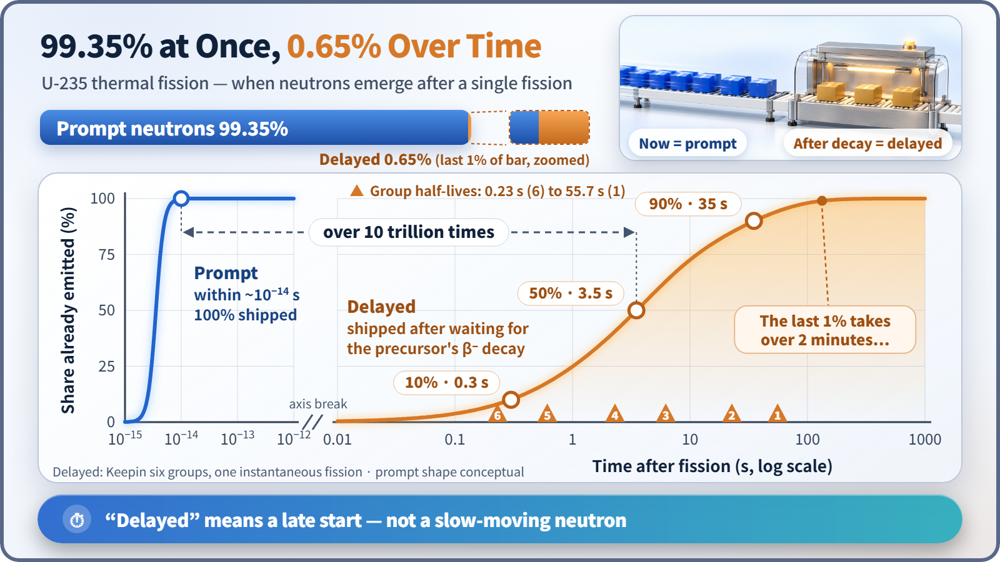
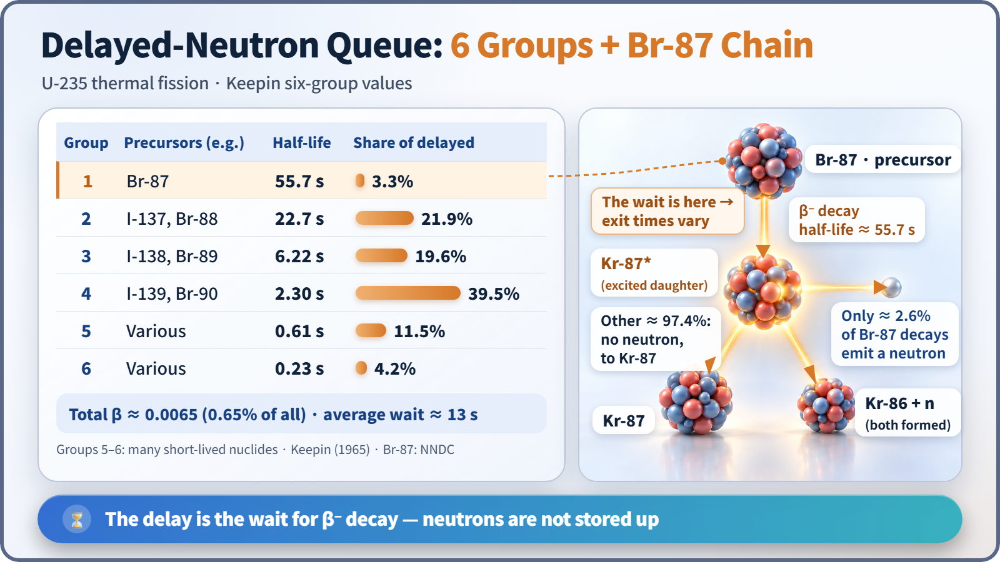

Nuclear Reactions & Fission · 037
Ships Now or Ships Later — Prompt and Delayed Neutrons Differ in When They Leave
Delayed neutrons are not slow neutrons. They leave late because a fission fragment must beta-decay first, and that wait ranges from under a second to minutes.
About 99.35% of the neutrons from uranium-235 fission burst out within about 10⁻¹⁴ seconds; the remaining 0.65% come out seconds to minutes later. The latecomers, delayed neutrons, are not slow. They simply wait for a fission fragment to beta-decay first. [1]
You ship 10,000 boxes, and 65 arrive late
Picture a strange delivery company. It accepts 10,000 boxes, and 9,935 of them leave the moment the order is placed: instant dispatch. The other 65 can't go straight out. They make a detour through a sorting center for one more round of processing, and only then do they ship, some in under a second, others a few minutes later. Call it scheduled delivery.
It's exactly how the neutrons from a splitting uranium-235 nucleus behave. Each fission releases about 2.4 neutrons on average, and almost all of them burst out on the spot. Only a tiny fraction come out noticeably later. The first group are called prompt neutrons, and the latecomers are delayed neutrons.
Instant dispatch: gone the moment the nucleus splits
In fission, a nucleus breaks into two pieces called fission fragments. A freshly born fragment is stuffed with too many neutrons and wildly excited, so it shakes off the surplus immediately. That takes about 10⁻¹⁴ seconds or less, shorter than one second divided into 100 trillion slices.
When U-235 splits after absorbing a thermal (slowed-down) neutron, these prompt neutrons make up about 99.35% of the total. Their average energy is about 2 MeV. Most of the neutrons described by the fission energy spectrum are exactly these. [2]
Scheduled delivery: the 0.65% that stops at the sorting center
The remaining 0.65% or so take a different route. Some fragment nuclides first undergo beta-minus (β⁻) decay, in which a neutron inside the nucleus turns into a proton and an electron is emitted. If the daughter nucleus left behind is excited to a very high energy, it can throw out an entire neutron instead of a gamma ray. That neutron is a delayed neutron, and the nuclide that starts the chain is called a precursor.
The final step, the neutron actually popping out, is just as instantaneous as on the prompt side. The delay comes from waiting for the β⁻ decay that comes before it. In delivery terms, the truck isn't slow; the wait at the sorting center is long. That wait differs from precursor to precursor: in terms of half-life (the time for half of the nuclei to decay), it ranges from about 0.2 to 55 seconds. Counting from the moment of fission, half of the delayed neutrons are out within about 3.5 seconds and 90% within about 35 seconds, while the stragglers can take more than 2 minutes. [1]

Between 10⁻¹⁴ seconds and a few seconds lies a gap of more than 10 trillion times. The time axis has to be squashed onto a logarithmic scale just to fit both groups in one picture.
Six numbered tickets at the sorting center
There are hundreds of precursor nuclides, far too many to handle one by one, so they are bundled by similar half-lives into six groups. The values measured and compiled by G. R. Keepin's team in the United States in the 1950s and '60s are still printed in textbooks today. Weighting each group by its share, a precursor waits roughly 13 seconds on average before a neutron comes out. [1]
| Group | Main precursors (examples) | Effective half-life | Share of delayed neutrons |
|---|---|---|---|
| 1 | Br-87 | 55.7 s | 3.3% |
| 2 | I-137, Br-88 | 22.7 s | 21.9% |
| 3 | I-138, Br-89 | 6.22 s | 19.6% |
| 4 | I-139, Br-90 | 2.30 s | 39.5% |
| 5 | several short-lived nuclides | 0.61 s | 11.5% |
| 6 | several short-lived nuclides | 0.23 s | 4.2% |
The star of group 1, the longest wait, is bromine-87 (Br-87). With a half-life of about 55.7 seconds, it β⁻ decays into excited krypton-87 (Kr-87*), and that excited nucleus emits a neutron to become krypton-86. Only about 2.6% of Br-87 decays take this path; the other 97.4% or so emit no neutron at this stage and end up as krypton-87 in its ground state. [3]

The delayed-neutron fraction, written β, also depends on the fuel. For U-235 it is about 0.0065, but for plutonium-239 it is only about 0.0021, roughly a third as much. [4]
Every analogy has its limits. A real scheduled delivery has a fixed date, but precursors obey only the probabilities set by their half-lives. One Br-87 nucleus may decay after 1 second, another after 3 minutes. The 55.7 seconds is the time for half of them to decay, not a fixed shipping time.
Three easy mix-ups
"Aren't delayed neutrons the ones that travel slowly?" No. "Delayed" means they leave late, not that they move slowly. Their average energy, about 0.4 to 0.5 MeV, is lower than that of prompt neutrons, but that has nothing to do with thermal neutrons, which have been slowed down by a moderator.
"Do precursors collect neutrons and release them later?" No. Nothing is stockpiled. A daughter nucleus freshly made by β⁻ decay is more excited than it can handle, and it releases a single neutron at that instant.
"Is this the same as the heat that keeps coming after a reactor shuts down?" No. Heat after shutdown is about the radiation energy given off by fission products. Delayed neutrons are about a particle, the neutron.
Why the 0.65% gets the spotlight
Why fuss over late neutrons that make up less than 1% of the total? Because these latecomers slow the chain reaction down to a pace humans can follow. A chain reaction running on prompt neutrons alone would be far too fast to manage, but mix in neutrons that wait several seconds and the story changes.
Key takeaways
Out of every 10,000 fission neutrons, about 9,935 leave by instant dispatch the moment the nucleus splits, and about 65 go by scheduled delivery through the sorting center of a precursor's β⁻ decay, leaving over seconds to minutes. The difference between prompt and delayed is not speed but departure time.